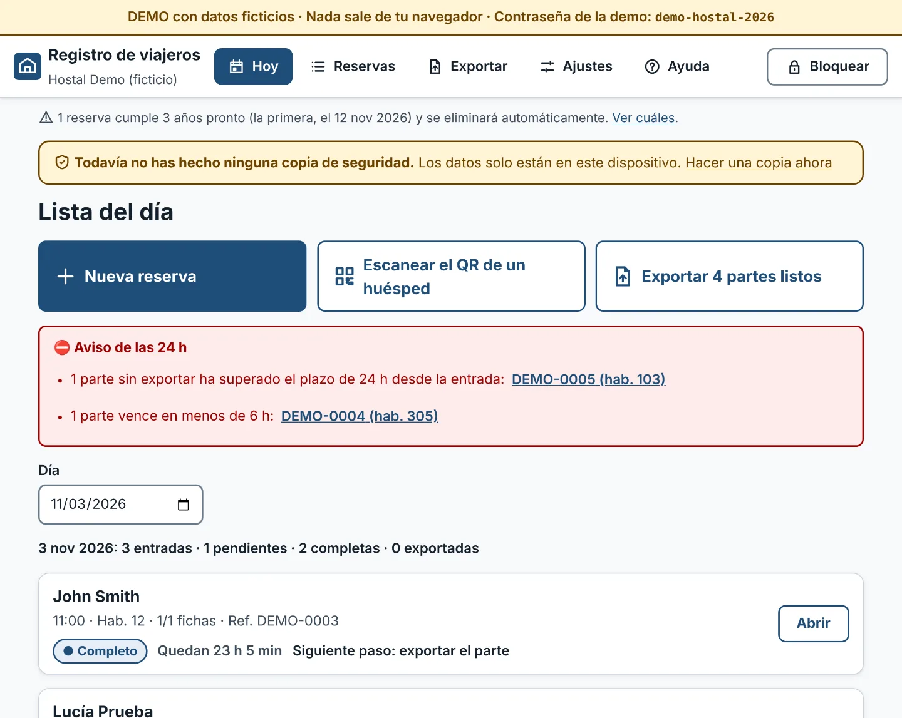
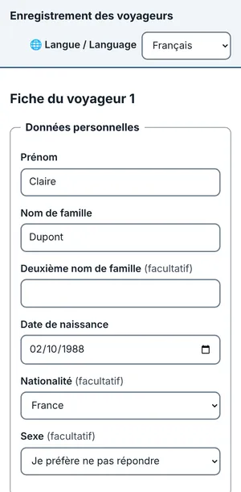

Registro de viajeros para alojamientos pequeños
Para pensiones, pisos turísticos, casas rurales y casas de huéspedes sin programa de gestión: tus huéspedes rellenan sus datos en su móvil, tú ves de un vistazo qué partes faltan y generas el fichero que pide SES.Hospedajes. Gratis, libre y sin servidor.
Importante: es una herramienta no oficial. No envía nada al Ministerio del Interior: prepara y valida el fichero, y lo subes tú al portal SES.Hospedajes. El alojamiento sigue siendo responsable de comunicar los datos de cada viajero en plazo (24 horas) y de que sean correctos.
Probar la demo (datos ficticios) Leer las instrucciones (README)

Qué hace
- El huésped rellena su ficha en su móvil, en español, inglés, francés, alemán, italiano o portugués, desde un enlace o un QR que le envías. No instala nada ni crea cuentas.
- Recepción la importa escaneando un QR con la cámara (o pegando un código). También puedes rellenar las fichas tú.
- Revisa cada parte con mensajes claros (falta el segundo apellido, la letra del DNI no cuadra…) y avisa de los que vencen en 24 horas.
- Genera el fichero XML de alta masiva (partes de viajeros o reservas de hospedaje) según el documento oficial del Ministerio, y lo valida dos veces antes de dejarte descargarlo.
- Funciona sin conexión una vez abierta, y se puede instalar como una app en el ordenador, la tablet o el móvil de recepción.

Qué NO hace
- No envía nada al Ministerio ni se conecta con SES.Hospedajes. Hasta que subes el fichero al portal, la comunicación no está hecha.
- No te quita la responsabilidad: el alojamiento responde de comunicar a tiempo y bien. Contrasta el primer fichero en el portal: la app no se ha podido probar contra el portal real.
- No guarda nada en la nube ni hace copias por ti: si pierdes el equipo o la contraseña sin una copia de seguridad, los datos se pierden.
- No manda avisos por correo ni SMS: los avisos de plazo se ven al abrir la app.
- No es asesoría jurídica (RGPD, LOPDGDD): consulta con quien corresponda.
Privacidad: todo se queda en tu dispositivo, cifrado
- Sin servidor, sin cuentas, sin analítica y sin cookies: los datos no salen de tu dispositivo y nadie más puede verlos.
- Se guardan cifrados (AES-256) con una clave que sale de la contraseña del establecimiento. Esa contraseña no se puede recuperar: guárdala bien.
- La ficha del huésped viaja de su móvil a recepción como un código cifrado (QR, texto o archivo), sin pasar por ningún servidor.
- Las reservas se borran solas a los 3 años (con aviso previo) y puedes descargar copias de seguridad cifradas para guardarlas fuera del equipo.
Cómo empezar en 3 pasos
- Abre la app en el navegador del ordenador o la tablet de recepción (en la dirección donde la tengas publicada; para probar, en la demo) y crea la contraseña del establecimiento: después te guía un asistente de primeros pasos, con una reserva de prueba que luego borras. Si quieres, instálala desde el navegador para usarla como una app, también sin conexión.
- En el asistente (o después en Ajustes), pon los datos del establecimiento (el código que te dio SES.Hospedajes) y crea la primera reserva. Pulsa «Crear enlace para el huésped» y envíaselo por WhatsApp o correo.
- Escanea el QR del huésped, revisa el parte y, cuando esté completo, ve a Exportar, descarga el fichero y súbelo tú al portal SES.Hospedajes dentro de las 24 horas.
Y una costumbre: una copia de seguridad cifrada a la semana, guardada fuera de ese equipo.